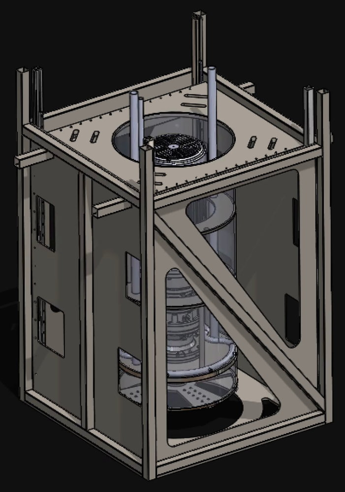
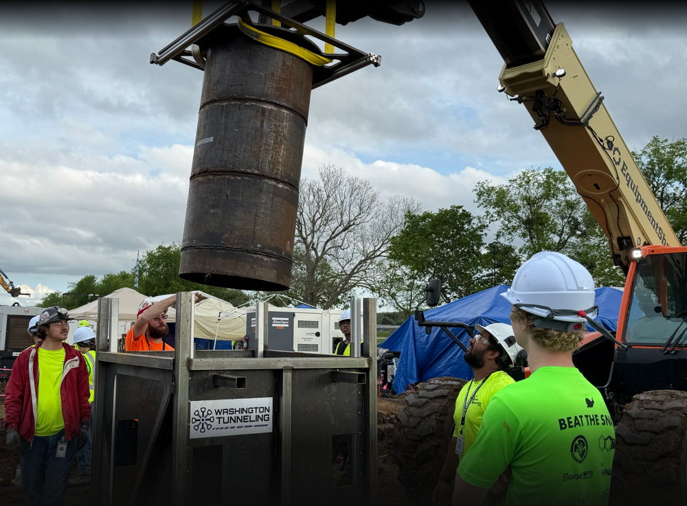
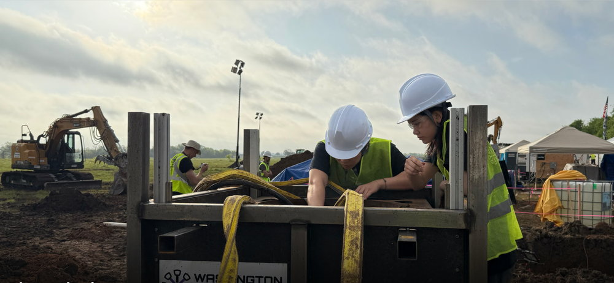

A Tunnel Boring Machine, 45 Engineers, and a Fixed Deadline
Washington Hyperloop · Executive Director & Electromechanical Systems Engineer · Jan 2024 – Apr 2025



The constraint
Build a working tunnel boring machine from nothing, with a student team, and run it at The Boring Company's national competition on a date that does not move. The budget was $20K and the team was 45+ engineers across 5 subteams.
A TBM is an unusually unforgiving first project because it is genuinely multi-domain and the domains fail into each other. Cutterhead motors, slurry pumps, sensing, firmware, and a telemetry server all have to work simultaneously, underground, where nothing is accessible once it is running.
Two jobs at once
I was both Executive Director and the engineer who owned the electromechanical control system. That is worth stating plainly because the combination is what made it work: the person setting the ME/EE/firmware schedule was the same person integrating those three domains at 2am, so the schedule reflected what integration actually costs rather than what each subteam estimated in isolation.
The control system
| Controller | ESP32, firmware in Embedded C. |
|---|---|
| Actuation | Motor drivers for the cutterhead and drive systems; pump controllers for slurry handling. |
| Buses | UART and I2C between the controller and peripherals. |
| Telemetry | Python data server providing live sensor state to operators at the surface. |
| Safety | Emergency stop and manual start paths designed for low-latency, fail-safe response — E-stop cuts power through a relay path rather than depending on firmware to be alive and responsive. |
Built from scratch, on a $20K budget covering the entire machine, with the operator interface designed around at-a-glance status: an operator who cannot see the machine has only the telemetry, so the display has to make an abnormal state obvious without requiring interpretation.
Integration failures were the real work
The recurring problems were not within any subteam — they appeared at the seams between mechanical, electrical, and software. This is the standard pathology of multi-domain student projects: each subteam validates its own part in isolation, all three pass, and the assembled system fails, at which point every subteam has evidence that the problem is somebody else's.
I ran structured root-cause analysis across those boundaries and drove the corrective actions through the subteams, which is what got the machine through the competition's mechanical, electrical, and software inspections. I was also the primary liaison to The Boring Company, translating their external technical requirements into internal design constraints — so that requirements arrived as specific things a subteam could design against, rather than as a document to be interpreted five different ways.
Outcome
- Zero control-system failures at the national competition.
- Passed all mechanical, electrical, and software inspections.
- Won the Cutterhead Mini-Competition.
- Delivered on schedule with no budget overrun.